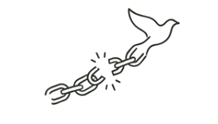

Yapay Zeka Etik Komisyonu
Yapay ZekaEtik Manifestosu
— Araç değişir; değerler kalır. —
"Eğitime dair hiçbir karar bir makineye bırakılmaz; yapay zeka ise daima insanın hizmetindeki bir araç olarak kalır."

— Araç değişir; değerler kalır. —
"Eğitime dair hiçbir karar bir makineye bırakılmaz; yapay zeka ise daima insanın hizmetindeki bir araç olarak kalır."
Teknoloji insanı güçlendirir, ikame etmez.
YZ çıktısı içselleştirilmeden sunulamaz.
Her YZ kullanımı açıkça beyan edilir.
Teknoloji fırsat eşitsizliği üretemez.
Algoritmik çıktı sorgulanmadan kabul edilemez.
Kişisel veriler korunmaya değerdir.
Bilinçli kullanım bir etik zorunluluktur.
Son söz daima insana aittir.
Tüm içerik tamamen bağımsız üretilmiştir.
YZ'den yararlanılmış; içerik kişisel katkıyla dönüştürülmüştür.
YZ belirgin biçimde kullanılmış; beyan edilmiştir.

Bağımlı